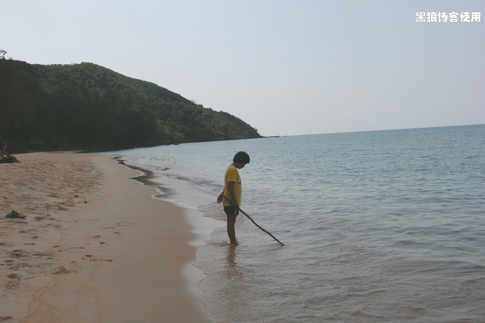

柬埔寨自助游（7）
题外话：
—— 到了柬埔寨游的结尾篇，你是不是也和我一样长出了一口气呢。确实，没完没了地弄，谁都受不了的。
1 月 31 日的小小虚惊，并不影响我和大包子的心情。我们两个每天依然花大部分时间在海边爬泳、捡贝壳，只是现在会穿着拖鞋。有一次差点抓到了一只很大的螃蟹，当时我用脚踩住，又让大包子去找工具，结果还是让螃蟹跑了。
岛上的生活，简单而又安静。
2 月 1 日，我带领着胡有理和大包子在原始森林中横穿小岛。
小岛上都是纵横交错的树木，游客们只能在沙滩边活动。从我们所在的海滩去东侧的海滩，有一条蜿蜒崎岖山路，大约 40 分钟的路程，就可以穿过原始森林。
没有行人，原始热带雨林，宁静得让人窒息。
东侧海边的海浪比较大，海滩的沙子是黄色的。
2 月 2 日，胡有理再也忍受不了海水的诱惑，泳衣下海了。我和大包子后来分析的结论是：胡同志看到海边都是三点式泳衣，不好意思把自己的连体式穿出来。
从大年三十，到初四上午，一个不同以往的春节。远离喧嚣的生活，没有电视，没有网络，没有电话，没有短信，只有平和、宁静，仿佛回到了我的童年，那个记忆中的年代。
2 月 3 日，在小码头等候渡船出岛之际，大豆包最喜欢的真丝围巾掉入大海中，并很快沉没，大豆包伤心不已。
坐船返回西哈努克港时已经是 17:00 了，那个小旅行社已经联系好了去金边的包车。看到车，吓了我一跳，丰田的SUV 居然没有车牌子。后来注意观察，才发现柬埔寨好多车子都不挂牌照。
从西哈努克到金边大约 200 公里，50 美金的车费。双车道的公路，路况一般，车辆并不多，时速 50、60 公里，需要行使 3、4 个小时。
路上，司机很疲乏，为了避免司机注意力不集中，我和老胡只能用英语和他攀谈。攀谈中，知道司机年龄在 50 岁左右，父亲是中国人，可惜司机并不会汉语。
这一路上，我说的英语单词比前面的十天加起来还要多，大包子时不时的品评我和胡有理的英语，但她并不与司机交流，可能是怕自己说错吧。
没话找话，还闹出了一个笑话。当时到了一个小镇，我忽然想说：“这个小镇很繁华”，就问大包子“繁华”怎么说。大包子沉默，胡有理说：“hot”，结果司机一听，把空调打开了，我赶忙解释说不用开空调，我对司机说：“The buildings is very beautiful”。后来的情况就是：我遭到了大包子的表扬和肯定，胡有理遭到了大包子的批评和鄙视。
一路无惊无险，到了金边已经是晚上 9 点 30 分了。
2 月 4 日早 6:10，坐出租车到机场（8 公里 12 美金），人非常少，几分钟就结束了签票和出关安检。
离开几天，再到北京机场的时候，已经开始流行带女朋友回家了。
结束了短暂的宁静，又将回到那个喧嚣浮躁的生活。